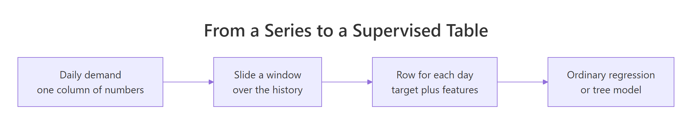
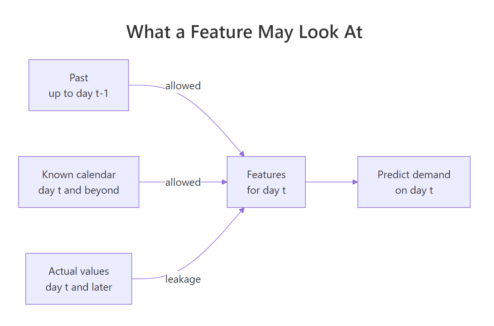
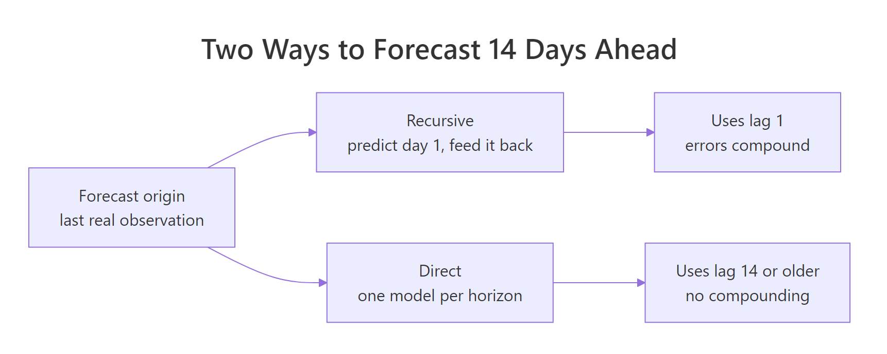
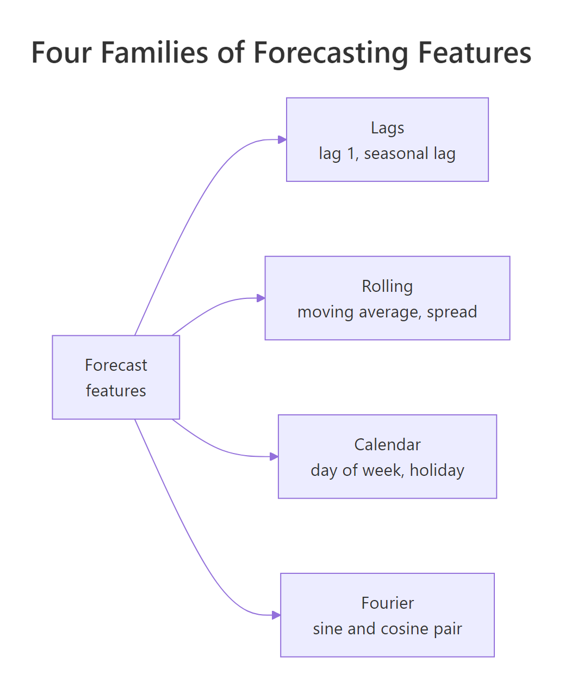

Feature Engineering for Time Series Forecasting in R
Feature engineering for time series forecasting means rewriting a series as an ordinary table, one row per time point, with columns that describe everything you knew before that point arrived. Do it well and a plain linear model beats the classical benchmarks. Do it carelessly and you build a feature that quietly contains the answer, which produces a perfect score and a useless forecast. This tutorial builds all four feature families by hand, shows you exactly what a leak looks like, and finishes with a real 14-day forecast. Every code block on this page runs in your browser.
Why does a forecasting model need engineered features at all?
ARIMA and exponential smoothing read a series directly. They know that observation 400 came after observation 399. A regression or a tree knows nothing of the sort: it sees one row of numbers at a time and has no idea the rows are in any order. Before those models can forecast anything, someone has to write the past into the row itself. That someone is you, and this section shows what it buys.
We will use three years of Victorian electricity demand, recorded every half hour. Half-hourly data is more detail than we need, so the first thing to do is roll it up to one row per day.
Here is what those lines did. The |> symbol is R's pipe: it takes the value on its left and passes it as the first argument to the function on its right, so the code reads top to bottom in the order the work happens. index_by() groups a tsibble by a new time label, in this case the calendar date pulled out of the half-hourly timestamp. summarise() then collapses the 48 half-hours of each day into three numbers: total demand for the day, the hottest reading, and whether it was a public holiday. Demand is recorded in megawatts, so multiplying by 0.5 hours and dividing by 1000 converts the daily total to gigawatt-hours. Finally as_tibble() drops the time series wrapper, because from here on we want a plain table.
We now have 1,096 rows and one number to predict: demand. And that is the problem. If you hand a regression model a single column, there is nothing on the right-hand side of the formula. The information a forecaster would actually use, what happened yesterday, what happened this day last week, whether tomorrow is a holiday, exists only in the order of the rows, and the model never sees that order.
So we have to copy it into the rows themselves. Three columns is enough to make the point: yesterday's demand, the demand seven days ago, and the day of the week.
Read row 9 across and the trick is obvious. On 2012-01-09 demand was 107. The lag1 column says the previous day was 96.7, which is exactly the demand value one row up. The lag7 column says 129, which is the demand value seven rows up. Each row now carries its own history.
The NA values at the top are unavoidable and correct. On the very first day there was no yesterday, so lag1 has nothing to report. lag7 stays empty for a full week for the same reason.
Now the payoff. We split the data by date, train a plain linear model on the earlier part, and score it on the last 90 days against the standard benchmark for weekly-seasonal data: predict every day to be exactly what it was seven days ago.
The split has to be by date, never at random. A random split would drop future days into the training set and past days into the test set, so the score you got back would describe a situation you will never be in.
Two pieces of R syntax are doing the work. lm() fits a linear model, and the formula demand ~ lag1 + lag7 + dow reads as "predict demand from these three columns"; the ~ separates the thing being predicted from the things predicting it. predict() then applies the fitted model to rows it has never seen.
That printout is a mean absolute error, in gigawatt-hours: on average, how far each forecast landed from the truth. The seasonal naive benchmark misses by 5.48 GWh a day. The linear model, using nothing but three engineered columns, misses by 4.16. That is a 24 percent improvement for about four lines of mutate().
Notice what the model was never given. It has no idea what a date is, no idea that the rows are chronological, no concept of a trend. Everything it knows arrived through columns you chose to build.

Figure 1: A sliding window turns one column of numbers into a table with a target and features.
Try it: Add a column called ex_lag2 holding the demand from two days ago, and print the first five rows so you can see where the missing values stop.
Click to reveal solution
Explanation: lag(x, n) shifts the column down by n positions, so the value that lands on row 3 is the one that used to sit on row 1. Two rows are pushed off the top and become NA.
What is a lag feature, and which lags should you use?
A lag feature is the series itself, shifted down. lag(x, 7) puts the value from seven rows earlier onto the current row. That is the whole idea, and it is worth seeing on numbers small enough to check by eye before trusting it on a thousand rows of electricity data.
Every value slides down by one column position per step. Row 4 says: the current value is 40, one step ago it was 30, two steps ago it was 20. Correct. The empty cells in the top-left corner are unavoidable, and there is exactly one rule about them.
So which lags belong in the table? Guessing is a waste of time when the data will tell you. The autocorrelation function measures how strongly the series correlates with itself at each shift, so the peaks in it are the lags worth building.
acf() returns the correlation at every shift starting from zero, and the correlation of a series with itself at shift zero is always 1, which tells you nothing. That is why we take elements 2:22 of the result: they are the correlations at shifts 1 through 21. setNames() then labels them 1 to 21 so the printout reads as lag numbers rather than positions.
Read the peaks. Lag 1 is the highest at 0.64, which just says yesterday resembles today. Then the numbers fall to 0.10 by lag 4 and rise again to 0.60 at lag 7, 0.54 at lag 14 and 0.51 at lag 21. Those spikes every seven days are the weekly rhythm of a working week: Tuesdays look like Tuesdays.
The dips matter as much as the peaks. Lags 3, 4, 9, 10 and 11 carry almost nothing, so building columns for them would add noise and cost you degrees of freedom. That leaves a shortlist of three: lag 1, lag 7, lag 14.
Let's add them one at a time and watch the error move.
The score() helper fits one model and returns its mean absolute error on the held-out 90 days, so each row of the printout is a fair comparison of one feature set against the next.
Now read the numbers in order. Yesterday alone misses by 6.68. Adding last week's same day cuts that to 5.14, a bigger single improvement than anything else we do in this tutorial. Lag 14 shaves off another 0.24, and the day-of-week label takes it to 4.12.
Try it: The autocorrelation showed a third weekly spike at lag 21. Add ex_lag21 to the feature set and check whether it earns its column.
Click to reveal solution
Explanation: Lag 21 improves the error by 0.05 GWh, roughly one percent. Real but small, which is what you would expect from an autocorrelation of 0.51 that mostly repeats what lags 7 and 14 already said. It also costs you three more rows at the start of the series. Worth keeping here, but a coin flip.
How do rolling window features summarise recent history?
A lag reports one day. A rolling window reports a stretch of days, compressed into a single number. A seven-day rolling mean of demand gives the typical level of the past week, so an unusually high or low single day moves it only a little, where a lag column would pass that one day straight through to the model at full size.
There is exactly one thing to get right, and it is the thing that trips up most implementations. The window has to end before the day you are predicting. If today is inside the window, the feature contains a slice of the answer. The fix is a habit worth memorising: lag first, then roll.
Two functions from the zoo package are doing the work here. rollmeanr() computes a right-aligned rolling mean, meaning the window ends at the current row rather than being centred on it. rollapplyr() is the general version: hand it any function and it applies that function to each window, which is how we get a rolling standard deviation. The fill = NA argument tells both to leave a gap where there is not enough history rather than quietly shortening the window.
The critical part is lag(demand) sitting inside both calls. We are rolling over the lagged column, so on 2012-01-08 the window covers 2012-01-01 through 2012-01-07 and stops. Today's 96.7 is nowhere near it.
rollsd7 measures how jumpy that week was. The 12.5 on 2012-01-08 covers the volatile New Year period; by 2012-01-11 the series has settled and the spread drops to 4.71.
So does a rolling mean actually help? That depends entirely on what else is in the table, and the honest answer is more interesting than "yes".
Read the first two numbers together. With only yesterday in the table, one rolling mean column drops the error from 4.29 to 4.11. Compare that against the third number: adding two more lag columns instead lands at 4.12. One rolling mean did the work of two lags, because it carries a summary of all seven of them.
Now read the third and fourth. Once lag 7 and lag 14 are already present, the same rolling mean is worth almost nothing: 4.12 to 4.09. And the rolling standard deviation actively hurts, pushing the error back up to 4.14.
None of that is mysterious once you write out what roll7 is. It is the average of lags 1 through 7. If lag 1 and lag 7 are already columns in their own right, the rolling mean is largely a repackaging of information the model has, so it adds redundancy rather than knowledge. Its real use is when you want a week of history without paying for seven columns.
Try it: Build ex_max14, the highest demand seen in the fourteen days ending yesterday. This is the kind of feature that helps a model spot heatwave conditions.
Click to reveal solution
Explanation: The lag(demand) inside rollapplyr() is what keeps today out of the window. Look at 2012-01-17: demand hit 145 that day, but ex_max14 still reports 134 because the window stopped the day before. On 2012-01-18 the 145 finally appears, which is exactly the behaviour you want.
How do you turn dates into features a model can use?
Every row already carries a date, and a date is a surprisingly dense package of information: which weekday it is, which month, how far through the year, whether the country is on holiday. None of that reaches the model until you unpack it into columns.
Calendar features have one property that no other family shares. You know them for every future date, forever. You do not know next Tuesday's demand, but you certainly know next Tuesday is a Tuesday.
Four lubridate functions did all of it. wday(label = TRUE) returns an ordered factor of weekday names, month(label = TRUE) does the same for months, and yday() returns the day of the year as a number from 1 to 366. Without label = TRUE, wday() returns a number instead, counting from 1 for Sunday up to 7 for Saturday, which is why wday(date) %in% c(1, 7) picks out exactly the two weekend days. That comparison is wrapped in as.integer() so TRUE and FALSE become 1 and 0, and the holiday flag converts the existing TRUE/FALSE column the same way.
Before modelling anything, it is worth checking that these columns describe a real pattern. If demand were flat across weekdays, dow would be dead weight.
That is about as clear as a pattern gets. Sunday averages 98.3 GWh and Thursday averages 118, a gap of nearly 20 GWh, which is four times the error our current model makes. Notice also that Saturday (102) sits well above Sunday (98.3), and that Monday and Friday are slightly below the midweek peak. A single weekend flag would flatten all of that into two numbers.
Let's confirm that intuition costs real accuracy.
update() takes an existing formula and adds terms to it, which keeps the comparison honest by guaranteeing the base features are identical in every model.
The weekend flag helps, moving 4.90 to 4.62. The full seven-level factor nearly doubles that gain, reaching 4.09, because it can price Saturday differently from Sunday and Monday differently from Wednesday. Adding the holiday flag takes it to 4.01. Holidays are only about three percent of days, so 0.08 GWh of average improvement means it is doing serious work on the days it applies to.
Try it: Public holidays, weekends and working days are three different kinds of day. Label each one and compare their average demand.
Click to reveal solution
Explanation: case_when() checks its conditions in order and stops at the first match, which is why holidays are tested first: a public holiday falling on a Monday should count as a holiday, not a working day. The result shows a public holiday averages 97.5 GWh, lower even than an ordinary weekend at just over 100, because factories close on top of the usual weekend drop.
Why encode seasonality with sine and cosine instead of a dummy per period?
Day of week worked beautifully because a week has seven slots and seven columns is cheap. Annual seasonality is a different problem. A year has 365 slots, and a factor with 365 levels is not a model, it is a lookup table with three observations per entry.
The obvious shortcut is to feed in doy, the day of the year, as a plain number. It fails in a specific and instructive way.
Look at the doy column across rows 2 and 3. December 31 and January 1 are consecutive days with near-identical weather and near-identical demand, and the encoding hands the model 365 and 1. To a regression that treats doy as a number, those two days are as far apart as any two days can be.
Now look at sin1 and cos1 on the same rows: -0.004 and 1.000 becomes 0.017 and 1.000. Practically no movement, which is the truth. Those two columns are the day of the year wrapped onto a circle, so the end of December sits right next to the start of January where it belongs.
If you would rather skip the formula, the code above is all you need. The next three paragraphs just explain where it comes from.
A Fourier pair is a sine and a cosine evaluated at the same fraction of the way through the cycle. For a cycle of length $m$ and a position $t$ within it, the $k$th pair is:
$$s_k(t) = \sin\left(\frac{2\pi k t}{m}\right), \qquad c_k(t) = \cos\left(\frac{2\pi k t}{m}\right)$$
Where:
- $t$ = position in the cycle, here the day of the year from
yday() - $m$ = length of the cycle, here 365.25 to average out leap years
- $k$ = the harmonic number, where $k = 1$ is one smooth wave per year and $k = 2$ adds a second wave that completes twice per year
You need both the sine and the cosine because a sine alone cannot represent a peak at an arbitrary time of year. Together they can shift the wave to peak wherever the data says it peaks, and the regression finds the right shift by choosing the two coefficients. Adding higher $k$ values lets the shape deviate further from a simple wave, at the cost of two columns each.
The 4 * pi in sin2 and cos2 is just 2 * pi * 2, the second harmonic. The \(v) round(v, 3) in the last line is R's shorthand for function(v) round(v, 3), a small unnamed function applied to each of the four columns so the printout is readable. Trace sin1 down the rows and you can see the year turning: it starts near 0 in January, peaks at 1 around day 90, returns to 0 by day 180 and bottoms out at -1 near day 270. One complete cycle per year, exactly as intended.
Now the comparison everyone wants: does this beat the alternatives?
Every annual term helps, which settles the first question: the year matters. Beyond that the result is more nuanced than most tutorials admit. Month dummies score best at 3.60, buying 0.41 GWh of improvement for eleven extra columns. One Fourier pair gets 0.23 of that same improvement, a little over half, for two columns. The second pair adds nothing at all here, which tells you Victoria's annual demand curve really is close to a single smooth wave.
So why prefer Fourier at all? Two reasons, and neither shows up in this MAE column. The first is that a smooth curve does not jump at midnight on the last day of the month, whereas month dummies claim demand changes discontinuously between January 31 and February 1. The second is that Fourier is the only option once the period stops being small: a half-hourly series has 336 slots in its weekly cycle, and nobody is fitting 335 dummy variables.
The straight-line doy encoding scored 3.69, which looks fine until you check what it implies at the year boundary.
The fitted doy coefficient is small, but it is multiplied by a drop of 364 as the calendar rolls over, so the straight-line encoding predicts a change of 2.89 GWh overnight on New Year's Eve purely because the day counter reset. The Fourier encoding puts that same transition at 0.01 GWh. Our test window happens to sit in October to December and never crosses the boundary, which is exactly why its 3.69 looked respectable. Forecast into January and that 2.89 GWh error lands in your numbers.
Try it: The weekly cycle can also be written as a Fourier pair, with period 7 instead of 365.25. Build one and see whether two smooth columns can replace the seven-level dow factor.
Click to reveal solution
Explanation: The factor wins decisively, 4.12 against 4.82. A single sine and cosine can only draw one smooth hump across the week, and the real pattern is a sharp cliff: five nearly identical weekdays followed by a steep two-day drop. Fourier is the right tool when the period is long and the shape is smooth, and the wrong tool when the period is short and the shape is blocky.
How do you keep the future from leaking into your features?
Everything so far has been about adding information. This section is about a single rule that governs all of it:
A feature for day t may only use information you would genuinely hold on the morning of day t.
Break that rule and your model does not just get a slightly optimistic score. It gets a spectacular score that collapses the instant you try to forecast anything real. The fastest way to understand leakage is to build one deliberately.
Here is a rolling mean written the way a tired person writes it at 6pm: two days, right-aligned, no lag.
The missing lag() is the entire bug. On row 2, roll2_bad is the average of 111 and 129, and 129 is the very number we are trying to predict. The feature contains half the answer.
Watch what a linear model does with that.
An R-squared of exactly 1 and a mean absolute error of exactly 0. Not "good". Perfect, on data the model was never trained on. If you ever see this, you have not solved forecasting.
The coefficients say precisely what happened.
The odd names are worth a word. A seven-level ordered factor such as dow enters a linear model as six columns, and R labels them .L, .Q, .C, ^4, ^5 and ^6 for linear, quadratic, cubic and higher shapes across the ordered levels. The labels do not matter here. What matters is the number beside each of them.
Every coefficient is zero except two: lag1 is -1 and roll2_bad is 2. The model found that
$$\text{demand}_t = 2 \times \frac{\text{demand}_t + \text{demand}_{t-1}}{2} - \text{demand}_{t-1}$$
which is just algebra. It abandoned day of week, abandoned last week, and solved for the target exactly, because we handed it a column with the answer folded in. Here is the same model with the lag restored.
An R-squared of 0.757 and an error of 4.12. That is what a genuinely useful daily demand model looks like, and next to the leaked version it looks like a failure. This is the trap: leakage makes correct work feel inadequate.

Figure 2: A feature for day t may use the past and the known calendar, never the actual future.
Not every leak is that blatant. The subtle ones come from external variables, where the question is not "is this from the future" but "will I have this number when I need it". Temperature is the perfect example, because electricity demand is largely a story about air conditioning.
Yesterday's temperature is worth literally nothing: 3.78 either way. Today's temperature is worth a lot, dropping the error to 3.31, the single biggest improvement available to us. Air conditioners respond to today's heat, not yesterday's.
So is temp a leak? It depends on a question that has nothing to do with statistics. When you forecast tomorrow's demand, will you have tomorrow's temperature? For electricity, yes, because the weather bureau publishes forecasts. Variables like this are called known-future regressors, and they are legitimate as long as you feed the model the forecast temperature and not the actual, which you would not have. For a variable with no forecast available, a competitor's price or a website's traffic, you must lag it.
Five questions worth asking about every feature before it goes into the table:
- Does this column use any observation dated on or after the day it describes?
- If it involves a window, does that window end strictly before the day being predicted?
- If it came from another series, will a value be available at forecast time, or only a forecast of it?
- Were any statistics used to build it (a mean, a standard deviation, a category encoding) computed on the training rows only?
- Could I generate this column for tomorrow right now, with nothing but data I hold today?
Question 5 is the one that catches everything. If you cannot compute the feature for a future date, the model cannot use it, no matter how good it made your validation score look.
Try it: A centred rolling window looks harmless and is not. Build a three-day mean centred on today, fit it alongside lag1, and compare its R-squared with an honest model. Then count how many predictions it manages to produce.
Click to reveal solution
Explanation: One word moved the window forward by a day, so it now spans the day before yesterday, yesterday and today. R-squared jumps from 0.424 to 0.614, entirely on the strength of a column that contains a third of the answer. The missing_predictions count is the second tell: the very last row cannot be computed at all, because the window reaches past the end of the data. Any feature that fails to exist at the end of your series is a feature that will fail to exist at forecast time.
How do you forecast more than one step ahead?
Everything so far has been a one-step forecast: predict tomorrow using yesterday. That is genuinely useful, and it is also not what most people are asked for. They are asked for the next two weeks.
Here is the difficulty, stated plainly. Standing at the forecast origin, the last day with a real observation, lag1 is available for day one of your horizon. For day two, lag1 would need day one's actual demand, which does not exist yet. Every lag shorter than the horizon runs out.
There are two standard ways around this, and they fail in opposite directions.
The recursive strategy builds one model with short lags, predicts day one, pretends that prediction is real, and uses it to build the features for day two. Repeat to the end of the horizon.
The history vector is the heart of it. It starts as the real training demand and grows by one predicted value per iteration. Each pass pulls lag1 from its last element, lag7 from the seventh element counting back from the end, and roll7 from its last seven. The - 6 in history[length(history) - 6] looks off by one until you notice that the last element is already one day back, so six more steps lands on the day seven back. By day eight of the horizon every one of those three features is built entirely out of the model's own predictions.
The forecasts track the weekly shape well, correctly dropping for both weekends. They also sit consistently a few GWh above the truth, and that bias is characteristic: once an error enters history, it comes back as an input and gets partially re-predicted, over and over.
The direct strategy avoids the feedback entirely. Build the model using only lags old enough to still be real at the far end of the horizon. For a 14-day forecast, that means lag 14 and older.
Every feature in m_dir is either 14 days old or a calendar fact, so all fourteen predictions come from real data in a single predict() call. No loop, no feedback, no compounding.
And the two strategies tie exactly, at 4.73 each. Which is a useful thing to happen, because it is meaningless. One forecast origin is one draw from a noisy process, and it cannot tell you which method is better.

Figure 3: Recursive feeds its own predictions back; direct only uses lags old enough to be real.
To answer it properly we repeat the whole exercise from six different origins, refitting both models each time on everything available up to that point, and then split the errors by how far ahead they were.
origins picks six starting points spaced fourteen days apart across the last twelve weeks. For each one, fe2[1:(s - 1), ] is everything before that origin and fe2[s:(s + 13), ] is the fortnight to forecast. Both models are refit on each origin's training data, so nothing from the future is ever used to fit anything.
Now the pattern is unmistakable. In the first week the recursive model wins, 3.57 against 3.70, because a real lag1 is powerful and it is still nearly real that early. In the second week it loses, 5.64 against 5.10, because by then every one of its lags is a prediction of a prediction and the errors have compounded. Both beat the seasonal naive benchmark at both horizons.
Try it: Build a direct model that uses lag7 as its shortest lag, and compare it with the lag14 version on the same fourteen days. The number will look better. Work out why you cannot use it.
Click to reveal solution
Explanation: The lag7 model scores 3.75, a full 1.2 GWh better, and it is a fantasy. On day 8 of the horizon, lag7 refers to day 1 of the horizon, which has not happened. The only reason a number appeared at all is that our future data frame was built from historical rows where those values happen to exist. In a live forecast, predict() would return NA from day 8 onward. This is leakage question 5 in action: could you compute this column for tomorrow, with only what you hold today?
Complete Example: an end-to-end feature pipeline for daily electricity demand
Everything up to here was built piece by piece to explain it. In practice you want one function that takes a raw daily table and returns a modelling table, so that training data and future rows are guaranteed to be built identically.
Three details in that function are worth calling out. arrange(date) guarantees chronological order before any lag is taken, because lag() operates on row position and will silently produce nonsense on shuffled rows. Every window is built from lag(demand) rather than demand. And the final filter() drops the fourteen rows where lag14 is missing, which leaves 1,082 clean rows.
Writing it as a function is not tidiness for its own sake. It is the only reliable way to guarantee that the columns you train on and the columns you predict on were produced by the same code.
Now, the question this whole tutorial has been building toward: which of these features actually earned its place?
That table is the tutorial in seven rows. Starting from a benchmark of 5.48, the first attempt at a model makes things worse at 6.69. The two seasonal lags together bring it back to 4.90, the largest step anywhere in the table. The rolling mean adds nothing at this point, for the collinearity reason we found earlier. Day of week is the largest single-column gain at 0.81 GWh, the holiday flag adds 0.08 and the Fourier pair another 0.23. Final score: 3.78, which is 31 percent better than the benchmark.
Does a fancier algorithm on the same columns do better? It is a fair question, and the answer is instructive.
The tree scores 5.05, considerably worse than the linear model, and the reason is visible in its predictions.
Across 90 days the tree emits just 7 different numbers, one per leaf. A tree predicts the average of the training rows that landed in each leaf, so its output is a staircase. That is fine for classification and awkward for a smooth continuous quantity. It also means a tree can never predict a value outside the range it saw in training, which matters enormously for any series that trends.
Finally, the picture. Numbers tell you how big the error is; a chart tells you where it lives.
The dashed line follows the weekly sawtooth almost exactly, which is the day-of-week factor and the seasonal lags doing their job. The gaps open up on the sharpest single-day drops, the ones driven by weather swings our feature table cannot see, which is exactly where the temperature forecast we discussed earlier would pay for itself.
One last practical note. Every feature in this tutorial was written by hand so you could see it, but you do not have to keep doing it by hand. The timetk package wraps the same operations in one-line helpers.
library(timetk)
tk_features <- daily |>
select(date, demand) |>
tk_augment_lags(demand, .lags = c(1, 7, 14)) |>
tk_augment_slidify(demand_lag1, .period = 7, .f = mean,
.align = "right", .partial = FALSE) |>
tk_augment_fourier(date, .periods = 365, .K = 1)
tk_features |> select(date, demand, demand_lag1, demand_lag1_roll_7) |> slice(8:11)
#> # A tibble: 4 × 4
#> date demand demand_lag1 demand_lag1_roll_7
#> <date> <dbl> <dbl> <dbl>
#> 1 2012-01-08 96.7 101. 114.
#> 2 2012-01-09 107. 96.7 112.
#> 3 2012-01-10 108. 107. 109.
#> 4 2012-01-11 109. 108. 105.Compare that rolling column against the one we built by hand earlier: 114, 112, 109, 105. Identical, because tk_augment_slidify() is applied to demand_lag1 rather than demand, which is the same lag-then-roll discipline in different clothing. The helper saves typing, it does not decide for you which window to use or whether the lag belongs there. That judgement is the part of this job that stays yours.
Practice Exercises
Exercise 1: Rebuild the pipeline for a monthly series
Daily data has a weekly cycle. Monthly data does not, so the feature set has to change. Take the Victorian cafe and restaurant turnover series from aus_retail, build a feature table with the previous month, the same month last year, a twelve-month rolling mean, and a month factor, then score a linear model against the seasonal naive benchmark on 2017 and 2018.
Click to reveal solution
Explanation: The structure is identical to the daily pipeline, only the seasonal period changed from 7 to 12. The model halves the benchmark error, from 44.10 to 23.01, and most of that comes from my_roll12: this series trends upward strongly, so the previous year's value alone is systematically too low, while a rolling twelve-month mean tracks the level as it rises.
Exercise 2: Find out which feature is carrying the model
The ablation table added features one at a time, which measures what each one contributes given everything before it. The complementary question is what each feature contributes given everything else. Write a function feature_mae() that scores a formula on the time split, then use it to drop each feature from the full model in turn and rank them by how much the error rises.
Click to reveal solution
Explanation: Removing dow costs the most, pushing the error from 3.78 to 4.49, so the weekly pattern is the single most load-bearing feature. lag1 is second at 4.17. The surprise is at the other end: dropping lag7 improves the score slightly, to 3.76, and dropping is_holiday barely moves it. Once dow, lag14 and roll7 are present, lag 7 is mostly repeating them. Add-one and drop-one disagree because features overlap, and that disagreement is the useful signal.
Exercise 3: How much of the weather gain survives a real forecast?
Same-day temperature took the error from 3.78 to 3.31, but only if you have tomorrow's temperature, and in practice you have a forecast of tomorrow's temperature which carries its own error. Simulate a weather forecast by adding normal noise with a standard deviation of 2 degrees to the actual temperature, then measure how much of the 0.47 GWh gain survives.
Click to reveal solution
Explanation: A weather forecast accurate to about 2 degrees delivers 3.38 against the perfect-knowledge 3.31, so roughly 85 percent of the gain survives. That is the calculation to run before investing in any known-future regressor: the value of the feature is not what it is worth with perfect information, it is what it is worth with the quality of information you can actually buy.
Frequently Asked Questions
How many lags should I include? Start with the peaks in the autocorrelation function, which for most business data means lag 1 plus one or two multiples of the seasonal period. Then test whether each earns its place, as we did above. More lags mean more rows lost at the start of the series and more parameters to estimate, so on a short series a large lag set will cost you accuracy rather than buy it.
Do I need to make the series stationary first? Not in the way ARIMA requires. A regression on lag features can handle a trending series if the feature set gives it something to track the level with, which is what a rolling mean does. That said, if your series grows multiplicatively, taking logs before building features usually helps a linear model, because it turns proportional changes into additive ones.
Should I scale or standardise the features? For linear models and trees, no: they are unaffected by the scale of individual columns. For regularised models like lasso or ridge, yes, because the penalty treats all coefficients on the same footing. If you do scale, compute the mean and standard deviation on the training rows only and apply those same numbers to the test rows. Computing them on the full data is a leak.
Are these features better suited to linear models or trees? Lags and rolling means suit both. Calendar factors suit trees particularly well, since a tree can split on "is it a weekend" naturally. Fourier terms suit linear models better, because a tree has to approximate a smooth wave with a staircase. If you plan to use trees, consider giving them the raw day-of-year as well, since they can cut it into intervals themselves.
How does this change when I have hundreds of series instead of one? The feature recipe stays the same, but every lag and rolling calculation must be done within each series, which means adding a group_by() before the mutate(). Forgetting it silently drags the tail of one series into the head of the next. Beyond that, having many series opens up the option of training one global model on all of them, which usually beats fitting hundreds of individual models.
When is feature engineering not worth the effort? When you have a single short series with strong, stable seasonality and no external drivers. ETS and ARIMA are built for exactly that case and will match or beat a feature-based model with a fraction of the work. Feature engineering pays off when you have external variables to bring in, many related series to learn from, irregular effects like promotions and holidays, or a nonlinear relationship a classical model cannot express.
Summary
Four families of features, all built from information you would genuinely hold at forecast time.
| Feature family | What it captures | How to build it | The trap |
|---|---|---|---|
| Lags | Yesterday, and the same day last cycle | lag(x, n) at the ACF peaks |
One lag alone is worse than the naive benchmark |
| Rolling windows | The level and volatility of recent history | rollmeanr(lag(x), k) from zoo |
The window must end before the day you predict |
| Calendar | Weekday, month, holiday effects | wday(), month(), yday() from lubridate |
A weekend flag throws away Saturday vs Sunday |
| Fourier | Long, smooth seasonal cycles | sin() and cos() at $2\pi k t / m$ |
Cannot represent a blocky pattern like a working week |

Figure 4: The four feature families every forecasting table is built from.
The other four things worth carrying away:
- A perfect score is a bug report. R-squared of 1.000 and an error of 0.00 meant a feature contained the target, not that the model was good.
- A holdout set does not catch leakage, because the flawed feature construction contaminates both halves of the split. Audit the columns, not the split.
- The right feature set depends on the horizon. Lag 1 is your most valuable column at one step ahead and unusable at fourteen, which is the whole reason the direct strategy exists.
- Wrap the pipeline in a function so training rows and future rows are built by identical code. Every feature bug you will ever have starts as a difference between those two paths.
Final scoreboard on 90 held-out days of Victorian electricity demand: seasonal naive 5.48 GWh, full feature set 3.78 GWh. No neural networks, no hyperparameter search, just eight well-chosen columns and a linear model.
References
- Hyndman, R.J. & Athanasopoulos, G. - Forecasting: Principles and Practice, 3rd Edition. Chapter 7: Time series regression models. Link
- Hyndman, R.J. & Athanasopoulos, G. - Forecasting: Principles and Practice, 3rd Edition. Chapter 12.1: Complex seasonality and Fourier terms. Link
- Kaufman, S., Rosset, S. & Perlich, C. - Leakage in Data Mining: Formulation, Detection, and Avoidance. ACM KDD (2011). Link
- Bergmeir, C. & Benitez, J.M. - On the use of cross-validation for time series predictor evaluation. Information Sciences 191 (2012). Link
- Ben Taieb, S., Bontempi, G., Atiya, A. & Sorjamaa, A. - A review and comparison of strategies for multi-step ahead time series forecasting. Expert Systems with Applications 39 (2012). Link
- dplyr documentation - lead and lag reference. Link
- zoo documentation - rollapply and the rolling window family. Link
- timetk documentation - tk_augment_lags, tk_augment_slidify and tk_augment_fourier. Link
Continue Learning
- Time Series Cross-Validation in R with tsCV() - the rolling-origin evaluation we hand-rolled over six origins, done properly and at any horizon.
- Time Series Regression in R: TSLM and Spurious Regression - the same regression idea expressed in fable, with
trend()andseason()building the calendar terms for you. - Time Series Features with feasts - the other meaning of "feature": one number that describes a whole series, used to triage hundreds of them at once.